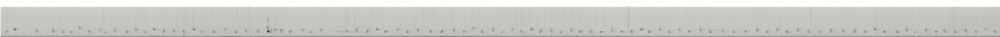

Le sonogramme Cornell (/640) ne correspond pas dans le temps
au fichier /mp3 téléchargeable (probablement généré depuis un
extrait différent). Ce test génère donc son propre sonogramme localement
avec ffmpeg à partir du mp3 réel, ce qui garantit une
correspondance exacte avec la lecture.